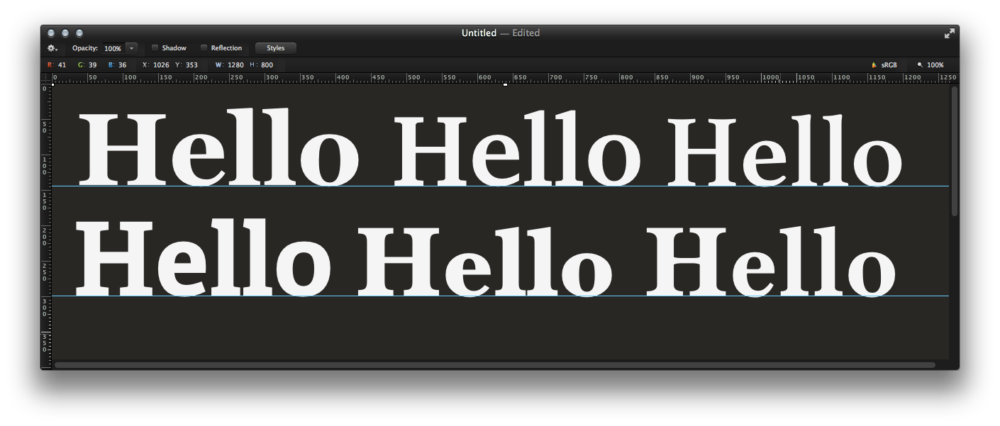
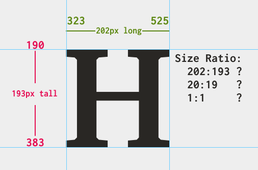
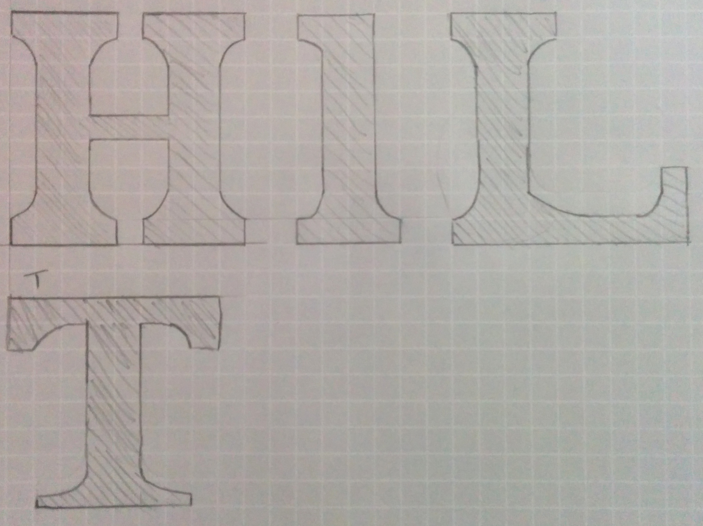

I decided to try and design an (incomplete) font just for fun, without any knowledge of typographical design beforehand. I also decided to document the steps I took to achieve it.
Once I'd decided I was going to design a serif font (no particular reason), I chose certain fonts I had already used, to see how they looked in true detail and find common characteristics between them.
I then selected one of these fonts — Adelle, the fourth font shown — to see what ratio of width:height it used. Here's what I got:
1:1 was probably the best ratio to use, since 202:193 is pretty random, and 20:19 might as well be 1:1. I didn't use any proper mathematics in deciding the ratio I would use, but I think it turned out fine.
For the actual creation of the letters in my own font, I drew them out on grid paper — I think this is the best way to do it, since I'm better with a pencil than I'll ever be with a pen tool.
As you can see I tried to keep consistency — serifs are usually the same width and height, the letters are all 1:1 ratio, etc.
After drawing out a few letters on paper, I used Pixelmator (basically
Photoshop − Supercost) to vectorise each shape. Of course the drawings
weren't exact, and so copy-and-paste enabled me to have both of the
stems/pillars/whatever at either side of the H have the same
shape, size, and curve.
Here's what I had after I finished vectorising the H —
my one is the one in the middle labelled 'Block Grande', and the other two are
the Hs of the fonts they are labelled as.
I'm fairly pleased with how it turned out. It's quite thick, which I'm not too keen on, but that's what has given it its name 'Block Grande'.
Now I just need to create 127 others of these — and that's only if I want to support ASCII, let alone Unicode.